웹 게임 모음
io 게임
Buildroyale.io
2D 포트나이트라고 불리는 Build Royale은 말 그대로 2D시점으로 플레이 하는 게임인데요 게임 방식도 포트나이트와 굉장히 유사합니다. 실제로 온라인 유저들과 실시간으로 배틀로얄을 즐기며 나무, 돌, 철등을 채굴해 벽을 지어 상대방의 공격을 막고 끝까지 살아남아야 합니다.
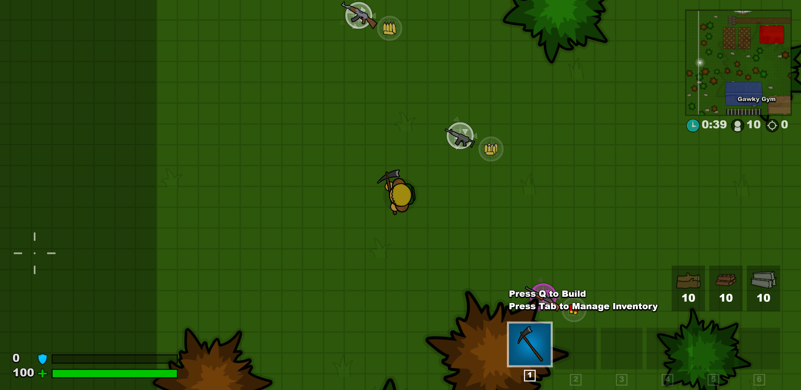Cursors.io - 나무위키로 가기
Cursors.io는 정말 간단하게 즐길 수 있는 킬링타임용 게임입니다. 온라인으로 즐길 수 있으며 자신의 마우스가 캐릭터가 되어 문을 열기위해 버튼 위에 있어야 하거나 다른 플레이어들과 클릭을 100번해야 문이 열리는 등 말 없는 유저들과 협동을 해 깨나가는 미니게임입니다.
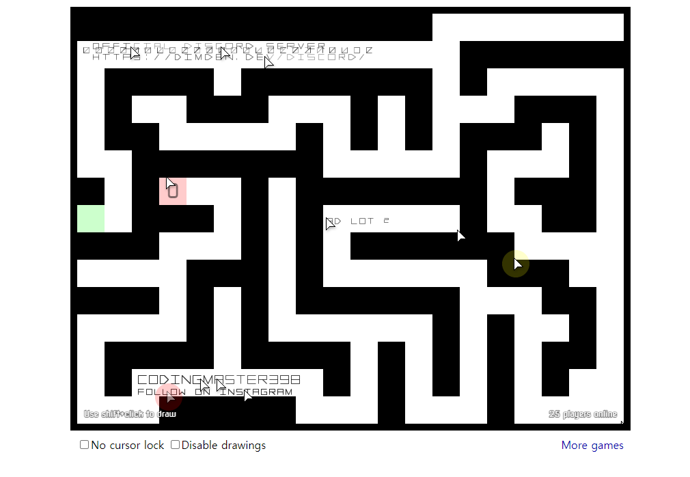Hordes.io - 나무위키로 가기
io게임 중 가장 흥미롭고 재미있게 플레이 했던 3D rpg 웹 게임이였습니다. 계정은 구글 아이디로 만들 수 있으며 전사, 궁수, 마법사, 샤먼 중 직업을 선택해 캐릭터를 만들 수 있습니다. 다른 MMORPG 못지 않게 스킬, 스탯, 아이템, 탈것, 클랜, 파티사냥 등 구성을 갖추고 있으며 친구들과 같이 파티 사냥을 한다면 매우 재미있을 것 같습니다.

Agar.io - 나무위키로 가기
Agar.io는 정말 많은 사람들이 알고있는 게임입니다. 바로 세포키우기 게임이죠. 동그란 모양에 캐릭터가 마우스를 따라다니며 세포를 먹습니다. 자기 캐릭터가 크게되면 작은 캐릭터를 먹을 수 있습니다.
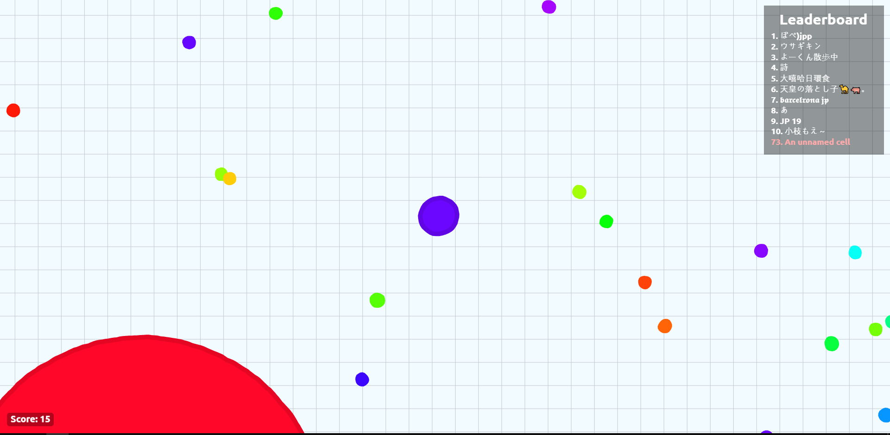Slither.io - 나무위키로 가기
Slither는 지렁이키우기로 유명한 게임입니다. 지렁이가 마우스를 따라다니며 빛이나는 것들을 먹습니다. 다른 지렁이를 죽이는 법은 다른지렁이에 머리를 내 몸에 부딪히게 해야합니다.
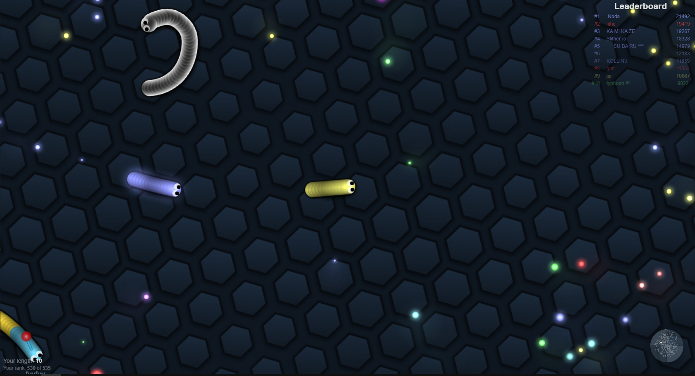Diep.io - 나무위키로 가기
Diep.io는 탱크키우기로 잘 알려진 게임입니다. 대포를 쏘아 도형들을 맞춰 키우고 레벨업을해 업그레이드가 가능합니다. 또 상대방을 죽이는것도 가능합니다
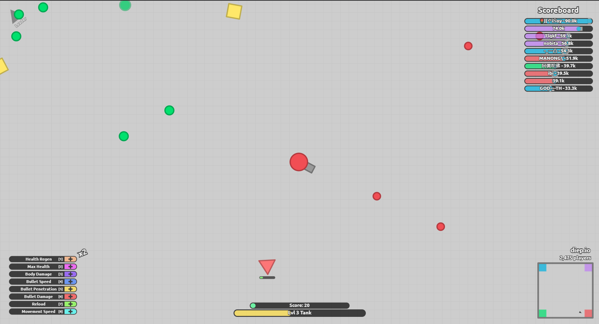splix.io - 나무위키로 가기
splix.io는 땅따먹기로 잘 알려진 게임입니다. wasd로 움직이고 머리가 자기 꼬리에 닿이면 죽습니다 상대방을 죽이는 방법은 내 머리를 상대방 꼬리에 닿게 하는것입니다.
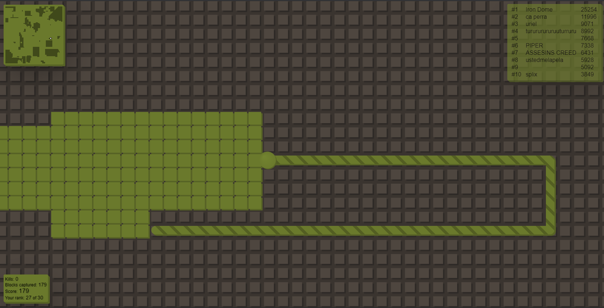mope.io - 나무위키로 가기
Mope.io는 생존을 위해 음식과 물을 먹는 동물들로 즐기는 게임입니다. 적이 있기 때문에 여러분이 더 작은 동물들을 먹고 더 높은 등급에 동물로 올라갈 때, 여러분 자신도 더 큰 동물들에게 잡아먹히지 말아야 합니다. 녹색의 윤곽을 가진 동물들은 여러분의 먹이이고, 붉은색을 가진 동물들은 여러분의 적입니다! 거의 모든 동물들은 게임 플레이를 편하게 할 수 있는 특별한 능력을 가지고 있습니다 - 예를 들어, 돼지는 진흙 위에서 빠르게 움직이고, 사자는 포효할 수 있고, 펭귄은 얼음 위에서 미끄러지고, 용은 날 수 있습니다!
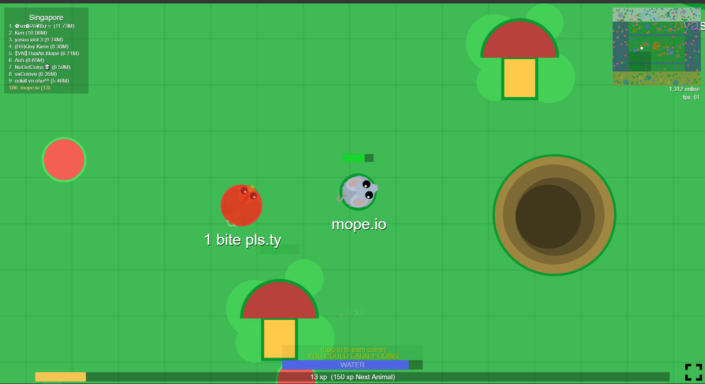moomoo.io - 나무위키로 가기
MooMoo.io는 자원을 얻거나 (동물, 다른 플레이어 등을 공격해 죽이는 행동 등을 통해 경험치를 얻으면서 나이를 올려 자신이 사용 가능한 아이템들을 습득 및 강화하여 끝없이 살아남는 것이 목적인 게임입니다. 레벨별 선택으로 얻는 장비 외에도 금을 소비해 모자와 악세서리를 구매해 장비할 수 있고, 이들 중 일부에 강화 효과가 있는 경우도 있습니다. 부족 생성과 가입을 자유롭게 지원해 다수의 유저와 팀을 이루어 플레이할 수도 있습니다. 대부분의 io.계열 게임들처럼 유저가 게임을 종료했을 때 플레이 정보를 보존할 어떤 수단(계정 생성, 쿠키 사용 등)도 존재하지 않는다.
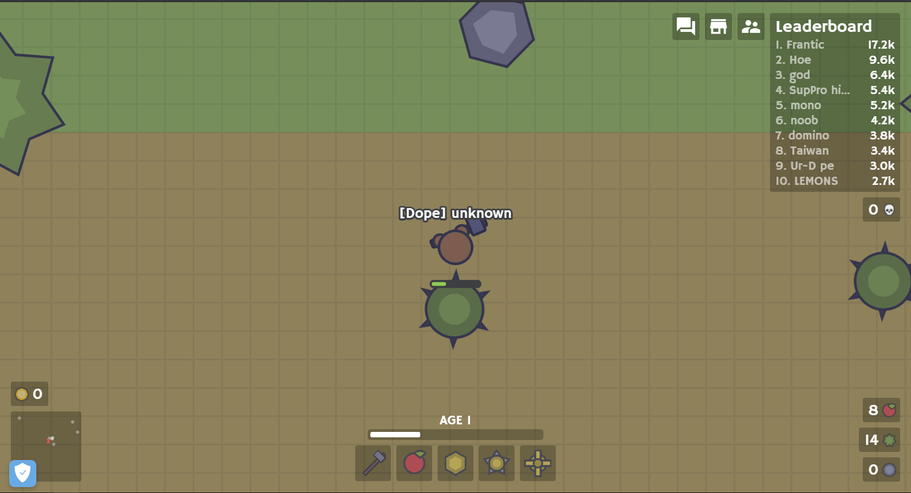deeeep.io - 나무위키로 가기
deeeep.io는 물고기 게임입니다 늪지대, 바다, 심해, 극지방이라는 기본적인 틀로 나뉘고 부가적으로 여러 가지의 맵으로 나뉘어 있고 먹이를 먹거나 다른 생물들을 죽여서 다른 물고기로 진화할 수 있습니다. 시작화면 우측 하단에 지도 제작기를 볼 수 있습니다. 여러 가지 모드들의 맵과, 생물들의 스킨을 만들 수도 있습니다.
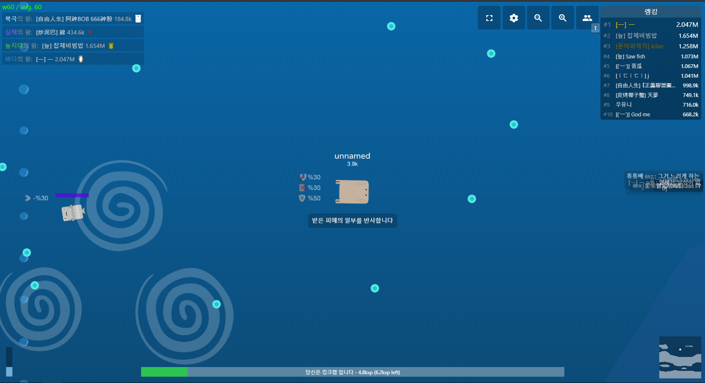wings.io - 나무위키로 가기
wings.io는 마우스를 이용해 비행기를 조작하여 다른 비행기들을 폭파시키는 것을 목표로 하는 개싸움 게임입니다. 컨트롤과 센스가 매우 중요시 되는 게임이며, 게임 진행이 빠릅니다.
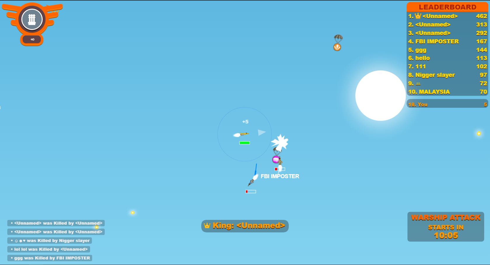hole.io - 나무위키로 가기
hole.io는 작은 구멍 안으로 사물/조형물/건물들을 떨어트려서 제한시간내에 제일 큰 구멍이 이기는게임입니다. 더 큰구멍이 작을 구멍을 먹을 수도 있습니다. 움직이는 방법은 마우스, 부스트같은 건 없습니다. 상대 플레이어들은 Ai이다. Ai이지만 상대Ai들이 엄청 잘해 1등이 쉽지않습니다.
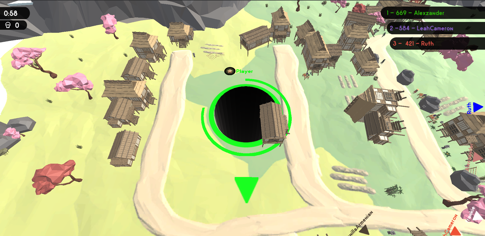starblast.io - 나무위키로 가기
starblast.io는 우주선을 키우는 게임입니다. 팀게임이고 운석을 파괴하여 키웁니다. 상대팀 우주선을 부수면 됩니다. io게임인가 싶을정도로 그래픽이 좋습니다. 추천합니다.
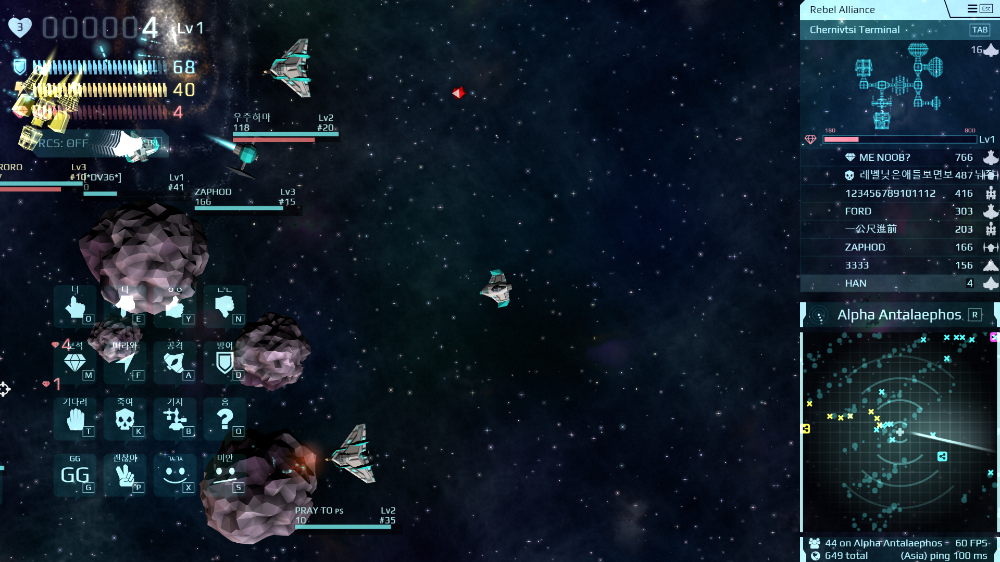vanar.io - 나무위키로 가기
키보드로 우주선을 조작해 다른 우주선을 부수는 게임입니다. 처음하면 조작이 어려울수도 있습니다. 저 같은 경우에는 조작을 잘하고싶어서 계속하게되는 게임이였습니다. '나 좀 게임 잘하는듯' 이라고 생각하는 분들에게 좋을것 같습니다
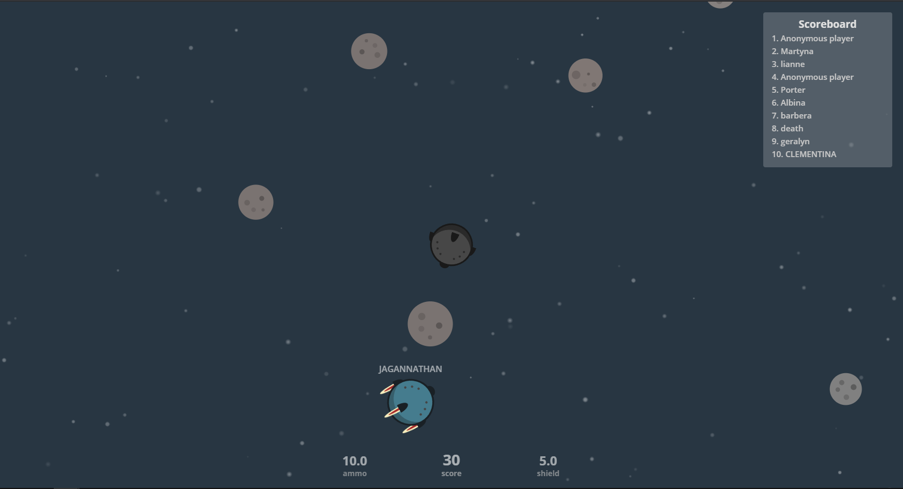battledudes.io - 나무위키로 가기
이 게임은 surviv.io와 굉장히 비슷합니다! 하지만 다른점은 surviv.io는 듀오,스쿼드....였다면 battledudes.io는 파랑팀과 빨강팀으로 놔눠 하는 팀전 입니다.
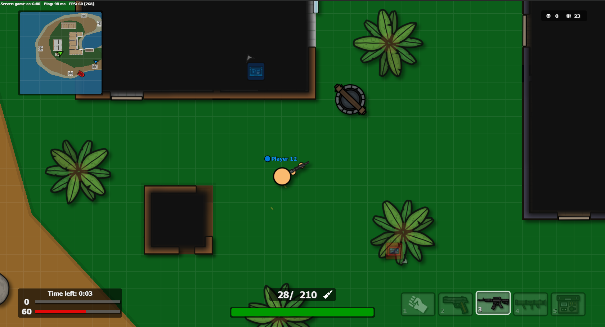